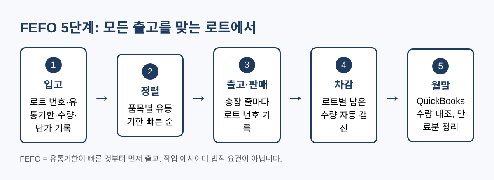
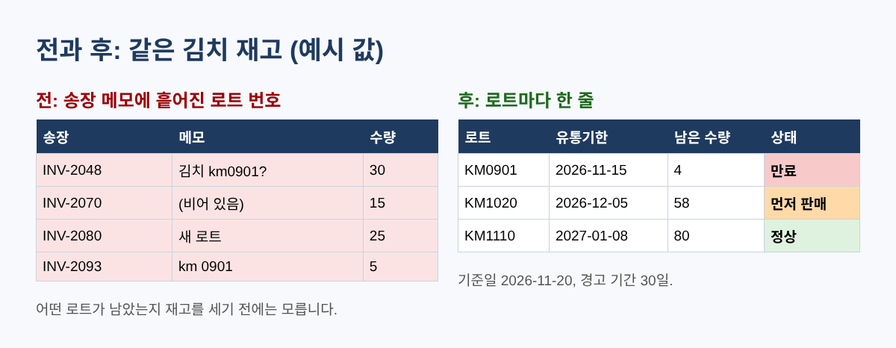
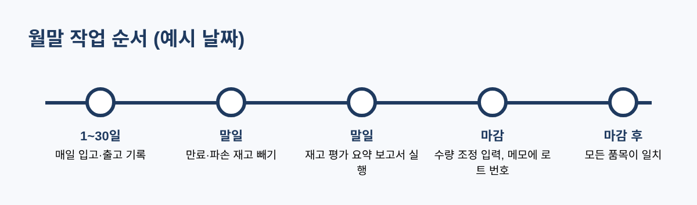

QuickBooks에서 로트 번호·유통기한 관리가 안 될 때: 엑셀로 하는 FEFO 재고 관리법
식품, 화장품, 건강식품처럼 유통기한이 있는 물건을 파는 사장님이라면 “QuickBooks에 로트 번호와 유통기한을 어떻게 넣나요?”라는 질문을 한 번쯤 검색해 보셨을 겁니다. QuickBooks 커뮤니티에도 같은 질문이 계속 올라오는데, 답은 거의 같습니다. QuickBooks Online에는 송장 품목 줄마다 로트·유통기한을 넣는 칸이 없고, QuickBooks Desktop은 Enterprise의 Advanced Inventory에서만 이 기능을 씁니다. 이 글은 엑셀이나 구글 시트로 오늘 바로 만들 수 있는 방법을 정리했습니다. 어떤 로트를 먼저 팔지, 무엇이 만료됐는지, 장부와 재고가 맞는지를 한 번에 확인할 수 있습니다.
이 글은 교육용 일반 정보이며 세무·법률·회계·식품안전 자문이 아닙니다.
누구에게 왜 중요한가
한인 식품 도매상, 마켓, 반찬 가게, 화장품 가게, 온라인 셀러는 같은 품목을 여러 로트로 받는 경우가 많습니다. 로트 번호가 송장 메모에만 흩어져 있으면 세 가지 문제가 생깁니다. 먼저 들어온 재고가 진열대에서 만료되는 사이 새 재고가 먼저 팔립니다. 만료·파손품을 버리고도 장부에서 빼지 않아 재무상태표의 재고 금액이 부풀려집니다. 그리고 공급처가 리콜을 하면 그 로트를 어느 거래처가 받았는지 바로 답할 수 없습니다.
QuickBooks가 해 주는 것과 못 하는 것
| 제품 | 로트·유통기한 관리 | 흔히 쓰는 우회 방법 |
|---|---|---|
| Desktop Enterprise + Advanced Inventory | 로트·시리얼 번호 가능, 유통기한은 Platinum·Diamond (2023·2024 버전) | Inventory Expiration Status 등 기본 보고서 |
| Desktop Pro·Premier | 없음 | 메모·품목 설명에 직접 기록 |
| QuickBooks Online Plus·Advanced | 품목 줄별 로트·유통기한 칸 없음 | 사용자 정의 필드(송장 전체에 값 하나), 줄 설명, 외부 앱 |
QuickBooks Online의 사용자 정의 필드(Custom fields)는 송장 전체에 하나의 값만 들어가고 품목 줄마다 따로 넣을 수 없습니다. 한 송장에 로트가 세 개 나가면 깔끔하게 관리할 수 없다는 뜻입니다. 또 하나, QuickBooks는 자체 원가 방식(Online은 FIFO 또는 이동평균, Desktop Pro·Premier는 평균 원가)으로 재고 금액을 계산합니다. 유통기한이 빠른 로트부터 내보내는 FEFO(First Expired, First Out)는 창고 운영 원칙일 뿐 장부의 재고 평가 방식을 바꾸지 않습니다. 그래서 아래 방법은 QuickBooks와 금액이 아니라 수량을 맞춥니다.

엑셀·구글 시트로 로트 관리표 만들기
1단계. “Lots” 시트 만들기 (로트마다 한 줄)
열 구성: A 입고일, B 품목 코드(SKU), C 로트 번호, D 유통기한, E 입고 수량, F 단가. 2행에 아래 수식을 넣고 아래로 복사합니다.
- G 남은 수량:
=E2-SUMIFS(Sales!D:D,Sales!B:B,B2,Sales!C:C,C2) - H 남은 일수:
=IF(D2="","",D2-TODAY()) - I 상태:
=IF(G2<=0,"Used up",IF(D2="","No expiry",IF(H2<0,"EXPIRED",IF(H2<=30,"SELL FIRST","OK")))) - J 판매 순서:
=IF(OR(G2<=0,D2=""),"",COUNTIFS(B:B,B2,D:D,"<"&D2,G:G,">0")+1)
30은 경고 일수입니다. 신선식품은 7~14일, 건조식품은 60일처럼 품목에 맞게 바꾸세요. 판매 순서가 1인 로트가 그 품목에서 가장 먼저 내보낼 로트입니다.
예시 값 (가상의 자료)
| 품목 코드 | 로트 | 유통기한 | 입고 | 남은 수량 | 남은 일수* | 상태 |
|---|---|---|---|---|---|---|
| KIM-1KG | KM0901 | 2026-11-15 | 60 | 4 | -5 | EXPIRED (만료) |
| KIM-1KG | KM1020 | 2026-12-05 | 80 | 58 | 15 | SELL FIRST (먼저 판매) |
| KIM-1KG | KM1110 | 2027-01-08 | 80 | 80 | 49 | OK (정상) |
*예시 기준일 2026-11-20. KM1020은 입고 80 − 판매 25 + 고객 반품 3 = 58개.
2단계. “Sales” 시트 만들기 (송장 줄의 로트마다 한 줄)
열 구성: A 날짜, B 품목 코드, C 로트 번호, D 수량, E 유형(Sale 판매, Return 반품, Expired 만료, Damaged 파손, Sample 샘플), F 고객, G 송장 번호. 고객 반품은 마이너스 수량으로 넣어야 같은 로트로 돌아옵니다. QuickBooks 송장에서도 품목 줄 설명 맨 앞에 로트 번호를 적어 두세요(예: “KM1020 · Napa kimchi 1kg”). 고객 사본에도 찍히고 나중에 검색할 수 있습니다.
오류는 두 가지 점검으로 대부분 잡힙니다. Lots 시트에 없는 로트 번호(=IF(COUNTIFS(Lots!B:B,B2,Lots!C:C,C2)=0,"Lot not found","")), 그리고 남은 수량이 0보다 작아진 로트입니다. 후자는 다른 로트로 잘못 출고 기록했다는 뜻입니다.

3단계. 매일 “먼저 팔 목록” 보기
Lots 시트를 남은 수량 > 0으로 필터하고 유통기한 오름차순으로 정렬합니다. EXPIRED는 진열대에서 빼고, SELL FIRST는 앞쪽에 진열하거나 할인합니다. 위험 금액은 =SUMPRODUCT(((I2:I500="EXPIRED")+(I2:I500="SELL FIRST"))*(G2:G500>0),G2:G500,F2:F500)로 구합니다.
4단계. 월말에 QuickBooks와 수량 맞추기
말일 기준 Inventory Valuation Summary(재고 평가 요약) 보고서를 실행합니다. Desktop은 Reports → Inventory 메뉴에 있고, Online은 Reports 화면에서 “Inventory Valuation Summary”를 검색하면 됩니다. 품목마다 QuickBooks 재고 수량과 =SUMIFS(Lots!G:G,Lots!B:B,"KIM-1KG") 값을 비교합니다.
예시 값 (가상의 자료)
| 품목 코드 | QuickBooks 수량 | 로트 남은 수량 | 차이 | 예상 원인 |
|---|---|---|---|---|
| KIM-1KG | 148 | 142 | 6 | 만료 6개를 버렸지만 장부 조정 안 함 |
| RMN-5PK | 300 | 296 | 4 | 파손 4개 장부 조정 안 함 |
| GCJ-500 | 180 | 180 | 0 | 일치 |
QuickBooks 수량이 더 많으면 장부에 폐기 입력이 빠진 경우가, 더 적으면 로트 관리표에 입고 기록이 빠진 경우가 대부분입니다.
5단계. QuickBooks에 폐기 수량 입력
QuickBooks Online (Plus·Advanced): + Create → Inventory qty adjustment(또는 Inventory → Adjustments → Create adjustment)를 선택합니다. Adjustment type은 Quantity only, Adjustment date를 넣고 Inventory adjustment account는 Inventory Shrinkage 같은 비용 계정을 고릅니다. 품목을 선택해 Change in quantity에 예를 들어 −6을 넣고, Memo에 로트 번호를 적은 뒤 Save and close를 누릅니다.
QuickBooks Desktop: Vendors → Inventory Activities → Adjust Quantity/Value on Hand, Adjustment Type은 Quantity. 조정 계정을 고르고 새 수량 또는 수량 차이를 넣은 뒤 메모에 로트 번호를 적습니다. Desktop을 오래 쓰신 분이라면 익숙한 화면입니다.
다시 비교하면 모든 품목의 차이가 0이어야 합니다. 재고 폐기의 세무 처리는 담당 세무 전문가와 확인하세요.

6단계. 리콜 조회 연습
Sales 시트를 로트 번호 하나로 필터하면 고객과 송장 번호 목록이 바로 연락처가 됩니다. 송장 번호로 QuickBooks에서 해당 송장을 열 수 있습니다. 식품 업체 참고: FDA 식품 추적 규정(FSMA 204) 페이지(2026년 11월 4일 기준)에 따르면 FDA는 준수 기한을 2028년 7월 20일로 미루는 안을 냈고, 의회는 그 전에는 규정을 집행하지 말라고 지시했습니다. 대상 식품은 정해진 추적 기록이 필요하며, 이런 엑셀표는 로트 번호 정리에 도움이 될 뿐 그 자체로 규정 준수 시스템은 아닙니다.
자주 하는 실수
- 같은 로트를 두 줄로 입력. 판매가 두 번 차감됩니다. 품목+로트마다 한 줄만 두세요.
- 고객 반품을 플러스 수량 “Sale”로 입력. 유형 Return에 마이너스 수량으로 넣습니다.
- QuickBooks와 금액으로 대조. 원가 방식이 달라 금액은 거의 맞지 않습니다. 수량으로 맞추세요.
- 만료품을 버리고 재고 수량 조정을 하지 않음. 재고가 부풀려진 채로 남습니다.
- 이미 마감한 달로 날짜를 거슬러 조정. 회계 담당자가 달리 말하지 않으면 현재 열린 기간으로 입력합니다.
자주 묻는 질문
QuickBooks Online 사용자 정의 필드로 로트 번호를 관리할 수 있나요?
가능은 하지만 송장 전체에 값이 하나뿐입니다. 송장마다 로트가 하나일 때만 쓸 만합니다. 줄 설명에 로트 번호를 적고, 엑셀을 기준표로 두는 편이 현실적입니다.
FEFO와 FIFO는 같은 건가요?
아닙니다. FIFO는 재고 금액을 계산하는 원가 방식이고, FEFO는 유통기한이 빠른 로트를 먼저 내보내는 출고 원칙입니다. 나중에 들어온 로트라도 유통기한이 빠르면 먼저 팝니다.
QuickBooks와는 얼마나 자주 맞춰야 하나요?
최소 매월, 그리고 재고 실사나 연말 마감 전에는 꼭 맞추세요. 김치·두부처럼 유통기한이 짧은 품목은 매주가 좋습니다.
로트 관리 때문에 Desktop Enterprise로 바꿔야 할까요?
거래량, 예산, Desktop을 얼마나 더 쓸지에 따라 다릅니다. 많은 소규모 업체는 꼼꼼한 엑셀표나 재고 앱으로 충분합니다. 결정 전에 Intuit 사이트에서 현재 가격과 지원 기간을 확인하세요.
점검표
- ☐ 모든 입고가 로트 번호·유통기한과 함께 Lots에 있음
- ☐ 모든 송장 줄이 Sales 시트와 QuickBooks 줄 설명에 로트 번호와 함께 있음
- ☐ 마이너스 수량 로트 없음, “Lot not found” 없음
- ☐ 만료·파손 재고를 실제로 뺐음
- ☐ 폐기를 QuickBooks에 입력, 메모에 로트 번호
- ☐ 모든 품목의 로트 합계가 재고 평가 요약 수량과 일치
위 과정을 그대로 해 주는 로트·유통기한 관리 트래커 (FEFO) 2026은 아래 무료 키트 다운로드에서 가입 없이 무료로 받으실 수 있습니다(엑셀 + PDF 가이드).
안내: 이 글은 교육용 정보이며 세무·법률·회계·식품안전 자문이 아닙니다. 규정과 프로그램 메뉴는 바뀔 수 있으니 전문가와 최신 공식 자료로 확인하세요. QuickBooks는 Intuit Inc.의 등록 상표이며, 이 글은 Intuit와 무관하고 보증받지 않았습니다. QuickBooks is a registered trademark of Intuit Inc.; not affiliated with or endorsed by Intuit. 예시의 이름과 숫자는 모두 가상입니다.
출처 (2026년 11월 확인)
- Intuit: QuickBooks Desktop Enterprise 로트·시리얼 번호와 유통기한
- Intuit: QuickBooks Online 재고 수량 조정
- Intuit: 재고 평가 방식 (FIFO 또는 이동평균)
- Intuit: QuickBooks Online 사용자 정의 필드
- QuickBooks 커뮤니티: 로트 번호·유통기한 칸 문의 (2026년 7월)
- QuickBooks 커뮤니티: QBO 유통기한 기능 요청 (2024)
- FDA: FSMA 식품 추적 규정 최종 규칙
무료 키트 다운로드
글에서 설명한 내용을 그대로 따라 할 수 있는 도구입니다. 가입 없이 바로 받으세요.
- Excel 계산 도구 (.xlsx)Lot_Expiry_Tracker_2026_EN_KR.xlsx · 218 KB
- 단계별 가이드 (PDF)Lot_Expiry_Guide_2026_EN_KR.pdf · 446 KB
본인과 본인 사업에 무료로 쓰세요. 재판매·재배포는 하지 마세요. 일반 정보이며 세무·법률·회계 자문이 아닙니다. 숫자는 본인 자료로 꼭 확인하세요. QuickBooks는 Intuit Inc.의 상표이며 BIZLEX는 Intuit과 관련이 없습니다.